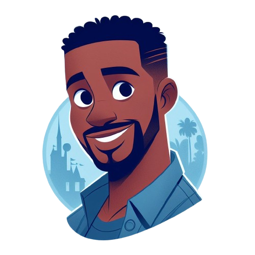
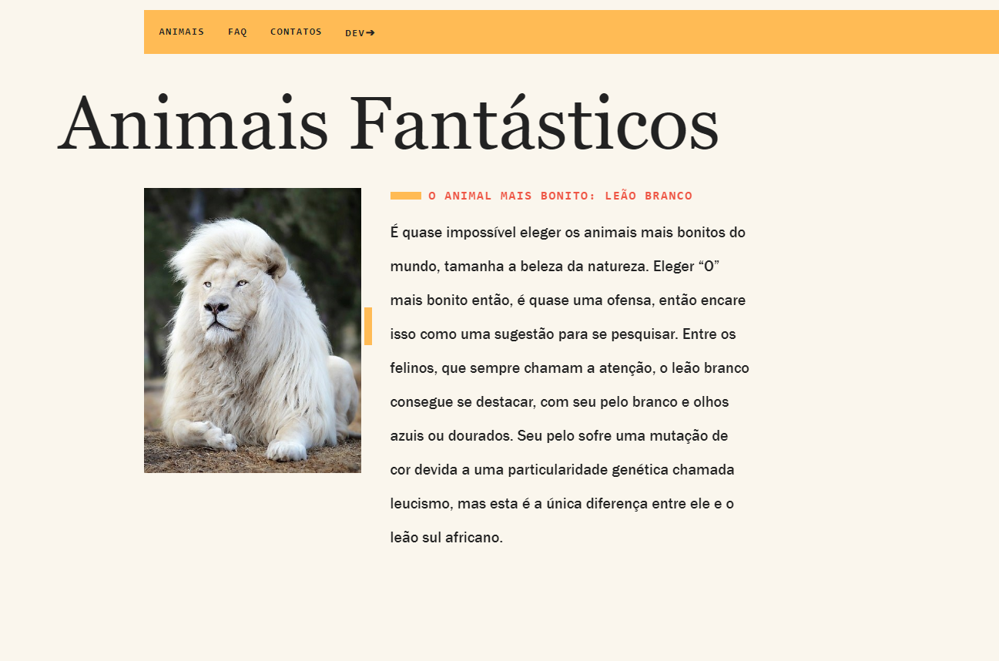
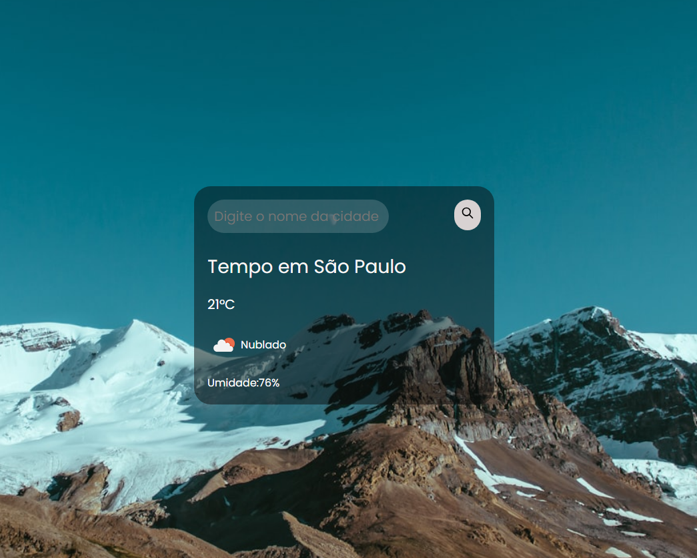

↗
↗
01
Cadastro de Serviços
Aplicação web para organização e cadastro de serviços, com foco em clareza visual e fluxo simples.
Projeto online ↗Sou Anderson Cruz, desenvolvedor frontend. Transformo ideias em experiências digitais modernas, responsivas e intuitivas.

Uma seleção de interfaces e aplicações que mostram minha evolução em desenvolvimento web e experiência de usuário.
↗
Aplicação web para organização e cadastro de serviços, com foco em clareza visual e fluxo simples.
Projeto online ↗ ↗
↗
Landing page institucional com comunicação objetiva e presença visual profissional.
Projeto online ↗
↗Projeto visual com conteúdo interativo e composição orientada à exploração da página.
Projeto online ↗
↗Interface de consulta climática com leitura rápida das informações e design responsivo.
Projeto online ↗ EM BREVE
EM BREVE
Projeto de interface para negócio local com destaque visual para produtos e conversão.
Link público em atualização EM BREVE
EM BREVE
Página promocional com foco em hierarquia visual, apelo gráfico e navegação direta.
Link público em atualização EM BREVE
EM BREVE
Experimento de interface esportiva com organização de conteúdo e forte apelo visual.
Link público em atualizaçãoMeu foco é unir desenvolvimento frontend, experiência do usuário e atenção aos detalhes para criar produtos digitais mais claros e agradáveis.
Eu me chamo Anderson Cruz e sou entusiasta de tecnologia. Minha formação é em Análise e Desenvolvimento de Sistemas, com pós-graduação em Desenvolvimento Web e Algoritmos e Lógica de Programação.
Ver LinkedIn ↗Interfaces responsivas
Experiência do usuário
Performance e organização
Estou disponível para novos projetos. Se quiser construir uma interface moderna e funcional, podemos conversar.